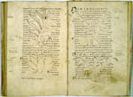

Liber herbarius. Latijn en Duits. Handschrift op perkament. 56 ff., 265 x 170 mm. Duitsland, twaalfde eeuw. -- (VLQ 40)
Karakteristiek voor de vrij talrijke latere Latijnse kruidenboeken is dit handschrift met zijn vrij stijve, nogal schematische pentekeningen, die maar sporadisch enigszins zijn ingekleurd. Daarnaast bleven echter ook gekleurde kruidenboeken in zwang. Een voorbeeld daarvan is het handschrift dat naast een herbarium een bestiarium bevat (zie nummer 81). Inhoudelijk stemt het besproken handschrift in grote lijnen overeen met het voorgaande nummer. Een van de afschrijvers probeerde de tekst werkelijk te begrijpen en vermeldde andere namen voor dezelfde plant, nu eens in het Latijn, dan weer in het Duits, zoals zo vaak in kruidenboeken.
De planten zijn zo rudimentair weergegeven dat zij nauwelijks nog dienst kunnen doen als hulpmiddel om de plant te herkennen. Zij zijn tussen de tekst door getekend alsof de tekening eerder werd gemaakt dan de geschreven tekst. Uit andere handschriften blijkt echter dat men bij het schrijven van de tekst door uitsparingen van meet af aan rekening hield met de figuren Uiteraard leed de kwaliteit van de illustraties daaronder.
Het handschrift ligt open bij dezelfde passage als het vorige nummer; op de rechterpagina, folio 15r, staan de afbeeldingen van de slang en de cyclaam. Een enkel element, met name de beharing van de knol, is hier beter getypeerd. Andere elementen zijn onjuist. Zo ontspruiten de stengels direct aan de knol. De planten op de tegenoverstaande pagina stellen een orchis spec., een herba satyrion en een gentiaan voor.
Onderzoek van tekst en illustraties heeft uitgewezen dat het handschrift behoort tot een andere familie dan het hiervoor getoonde.
Literatuur
- A.W. Byvanck, Les principaux manuscrits à peintures conservés dans les collections publiques du Royaume des Pays-Bas, Paris 1931 ( = Bulletin de la Société francaise de reproduction des manuscrits à peintures. 15), p. 79.
- K.A. de Meyïer, Codices Vossiani Latini. Leiden 1973-1984 ( = Bibliotheca Universitatis Leidensis. Codices manuscripti. XIII-XVI), t. 2, p. 105-107, t. 4, p. 8.
| vorige pagina | top pagina |